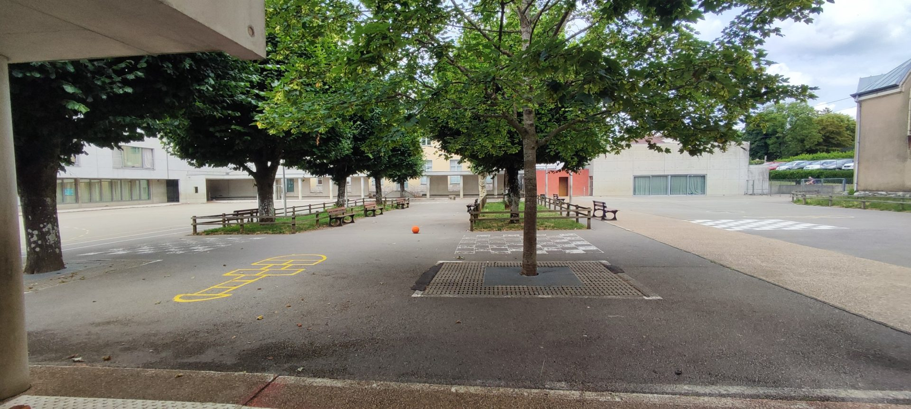
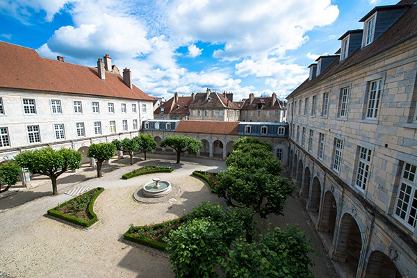
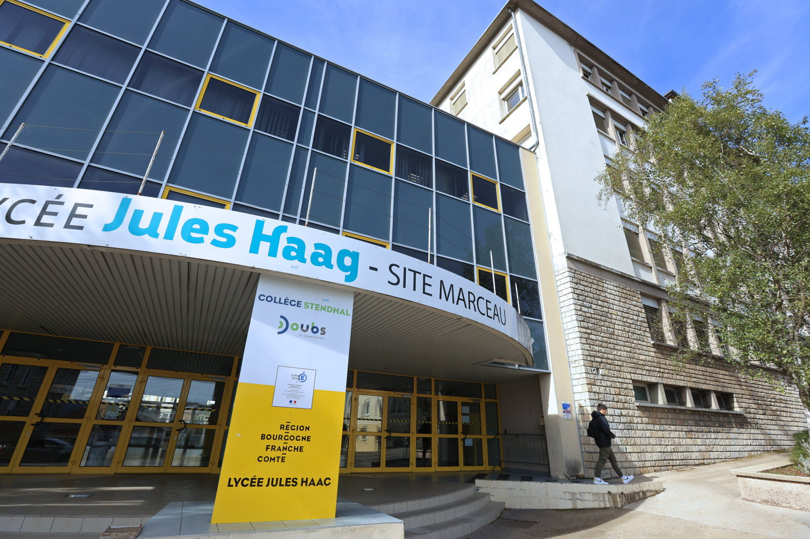
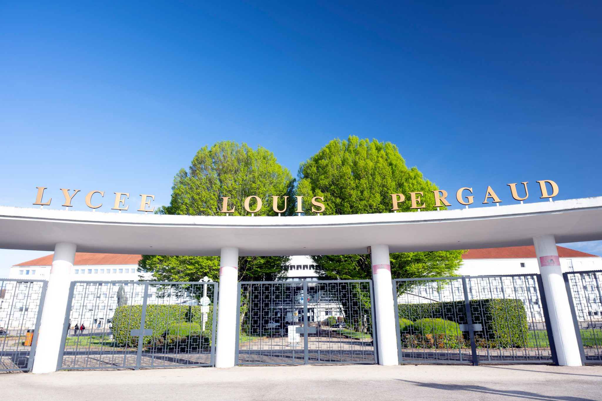

Bienvenue dans ma page de mon parcours scolaire ! Vous trouverez ici le contenue de toutes ma scolarité, de la primaire jusqu'au lycée !█
École élémentaire Saint-Claude
En 2013, j'ai rejoint l'école primaire Saint-Claude pour apprendre l'écriture, la langue française, la préhistoire et l'antiquité, la logique des mathématiques, la géographie, les mythologies grecs et un peu d'anglais. Elle m'a permis de comprendre le fonctionnement de la société et de mieux m'intégrer à l'environnement social.█

Collège Victor Hugo
De 2018 jusqu'en 2022, j'ai entamé au collège Victor Hugo pour améliorer mes connaissances en français, anglais, histoire, géographie. J'ai découvert des nouvelles matières tels que la science de la vie et de la Terre, la technologie, l'arts plastiques. Toutes ces enseignements m'ont permis d'obtenir le brevet des collèges mention bien.█

Lycée Jules Haag site Marceau
Pendant 3 ans, j'ai étudié au lycée Jules Haag site Marceau sur le fonctionnement d'un réseau, les protocoles utilisés par les machines pour se communiquer entres-elles et les régles des adressages IPs. J'ai en même temps étudiant de l'économie et juridique, de la prévention environnementale et toutes les autres matières générales. J'ai pu obtenir mon baccalauréat professionnel avec mention bien.█

Lycée Louis Pergaud
Je suis maintenant au lycée Louis Pergaud pour décrocher le diplôme de Brevet de Technicien Supérieur de Services Informatiques aux Organisations. J'étudie la cybersécurité, la programmation, davantages d'adressages IPs et le SQL. Mais aussi les matières générales tels que l'économie juridique et management, l'anglais et le français.█
